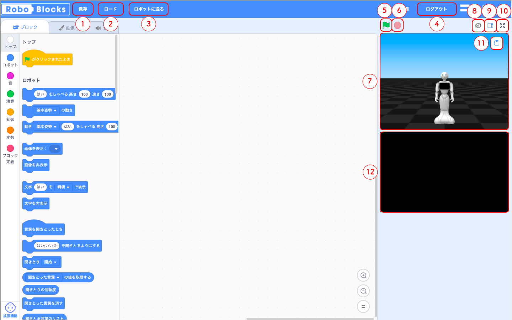
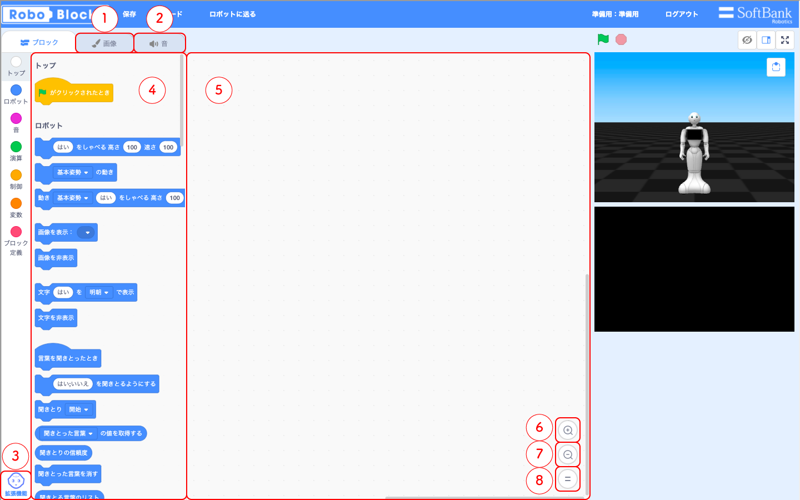
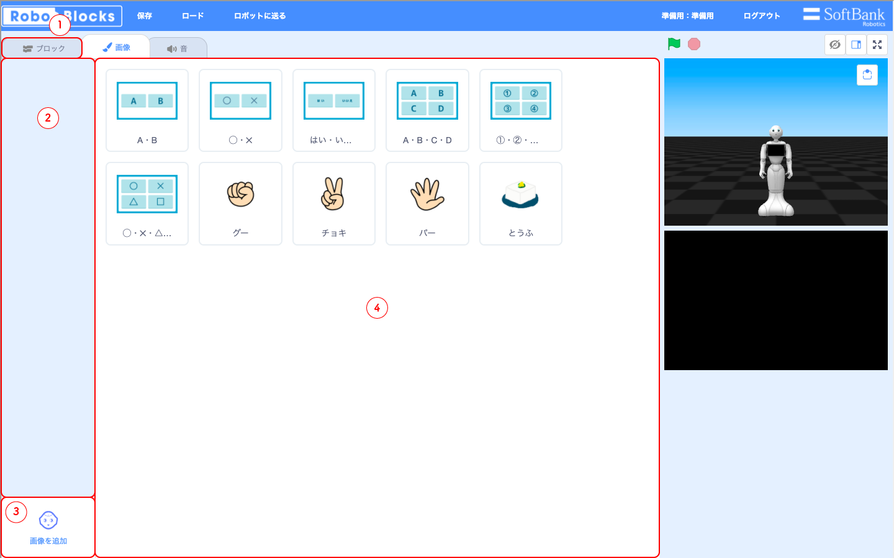
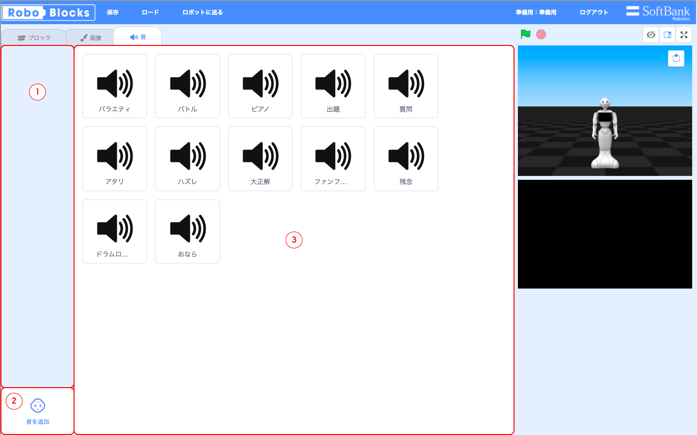

画面の各機能

- 「保存」
作ったプログラムをzipファイルとして、自分のパソコンに保存する - 「ロード」
パソコンに保存したプログラムを開く - 「ロボットに送る」
ネットを通してPepper本体にプログラムを送る - 「ログアウト」
ログアウトする - 「緑の旗」
パソコンでプログラムを実行する - 「赤い八角形」
パソコンで実行中のプログラムを止めたり、画像の表示や移動などのPepperの状態をリセットする - 「バーチャルロボット」
プログラムをパソコン上で実行した時に、実際のPepperとほとんど同じ動きをする
拡張機能の「追跡」や「QRコード」などの動作は確認できません - 「バーチャルロボットの表示/非表示」
バーチャルロボットの表示、非表示を切り替える - 「バーチャルロボットエリアの拡大、縮小」
バーチャルロボットエリアを拡大、縮小する - 「バーチャルロボットの全画面表示」
バーチャルとボットの全画面表示の切り替えをする - 「バーチャルロボットのカメラ切り替え」
バーチャルロボットのカメラの向きを切り替える - 「バーチャルロボットのタブレット」
バーチャルロボットのタブレットと同じ表示がされます
タッチセンサーも動作します

- 「画像」
画像タブに切り替える - 「音」
音タブに切り替える - 「拡張機能」
「追跡」や「LED」などを制御するブロックを追加する - 「ブロック一覧」
プログラムに使うことのできるブロックの一覧
ここにブロックを戻すとブロックを消すことができる - 「プログラミングエリア」
ブロック一覧から移動させたブロックを繋げて、プログラムを作るエリア - 「拡大」
ブロックのサイズを大きくする - 「縮小」
ブロックのサイズを小さくする - 「等倍」
ブロックのサイズをデフォルトに戻す

- 「ブロック」
ブロックタブに切り替える - 「使う画像一覧」
プログラムに使える画像のあるエリア - 「画像を追加」
自分のパソコンから画像をアップロードする - 「画像一覧」
デフォルトの画像やアップロードした画像の一覧
画像をクリックすると③のエリアに画像を追加することができ、プログラムで使うことができる

- 「使う音一覧」
プログラムに使える音声データのあるエリア - 「音を追加」
自分のパソコンから音声データをアップロードする
アップロードできるファイルは ogg または wav です - 「音一覧」
デフォルトの音声データやアップロードした音声データの一覧
画像をクリックすると②のエリアに音声データを追加することができ、プログラムで使うことができる
ブロックの切り離し方
組み合わたせたブロックは、下にくっついたものをまとめて移動させます。
図のような方法でブロックを切り離すことができます。